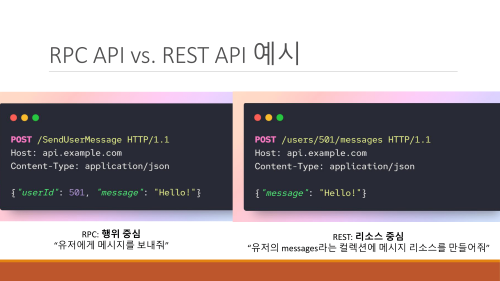

- 원격 프로시저 호출 시스템
A서버에서 만든 함수를B클라이언트 에서 사용하는
- 단방향 / 양방향 모두 지원한다
HTTP/2기반
RPC (Remote Procedure Call)
원격 프로시저 호출
- 다른 주소나 공간의 함수나 프로시저를 원격으로 실행할 수 있게 하는 기술
함수: 입력에 따른 아웃풋이 발생 즉Return값을 반환 하는프로시저: 아웃풋이 없이 그저 수행에 초점을 맞추는
- IPC 통신의 일종이라 볼 수 있다
- 사실상 REST API 서버도 웬만한 웹 프레임워크는 API 호출 범위를 함수로 잡기 때문에 수행 동작에는 큰 차이가 없지만 내부 로직이 다르다
gRPC는 RPC에 대표적인 구현체 인것이다
REST 와 차이점

- 클라이언트가 여러개의 API 요청을 서버에 보낼 수 있다.
- REST 와 달리 여러 요청을 한번에 보낼 수 있다는 것
- 따라서 여러개의 응답이 발생 할 수 있다
- 이게 무슨 소리냐면 스트리밍을 생각하면 된다
- 요청 방식
- gRPC에 경우 일반적인 함수 호출하듯이 호출한다
- 서비스 지향 설계
- REST 에 경우 제한된 HTTP 명령구문으로 이루어진다
- 엔티티 지향 설계
- gRPC에 경우 일반적인 함수 호출하듯이 호출한다
- 서버와 클라이언트에 긴말성
- 양방향 스트리밍 기능 제공
- 단일 연결에 대하여 클라이언트 서버 모두 여러 요청과 응답을 동시에 처리 가능 하다
프로토콜 버퍼
- gRPC 에서에
JSON느낌 - 메시지 구조를 짤 때
.proto파일을 통해 프로토콜 버퍼로 구조화 한다 .proto파일로 구조를 정의하고 실제 데이터를 보낼때는 json 처럼키,값형태가 아닌 그냥 값 데이터만 보내 바이트 크기를 줄일 수 있다
구조
정의 (.proto)
package test;
syntax = "proto3"; //ver3 사용을 위해 명시
message Person{
string name = 1;
int32 age = 2;
// 타입 | 필드명 | 필드테그
}- 약간 JAVA 클래스 처럼 쓰는느낌
- JSON 처럼 키 값으로 정의 하는 느낌이 아니라 그냥 데이터구조 잡는 느낌
직렬화
- name=
seok, age=22[string바이트]seok [int바이트]22 - 위에서 .proto 파일로 정의 이후 실제 전송되는 데이터
- 실제로는 바이너리로 직렬화 된다
- 받는 클라이언트는 위에 정의된
proto데로 해석 하기만 하면 됨
컴파일
.proto파일은 그냥 구조만 작성하는 거다 실제 정의된 데로 값을 작성하려면- https://github.com/protocolbuffers/protobuf/releases
- 해당 페이지에서 프로토콜 버퍼 컴파일러를 설치 해야 한다
.proto파일을 내가 개발하고 있는 언어로 컴파일 하면 해당 언어로 객체를 만들어 주게 된다- ex) python
- 컴파일 전 proto 파일
syntax = "proto3"; package com.terry.proto; message Person{ string name = 1; int32 age=2; string email=3; } - python 으로 컴파일된 proto 파일
import address_pb2 person = address_pb2.Person() person.name = 'Terry' person.age = 42 person.email = 'terry@mycompany.com'
- 컴파일 전 proto 파일
- 컴파일하여 address_pb2 파일이 만들어지고 해당 객체에 데이터를 입력하게된다
결론
- 그냥 값만 보낼테니 내가 구조 정의한데로 해석하셈 이런 느낌임
- 서버와 클라이언트는 동일한 proto 를 정의해야한다
- 그래야 데이터를 해석할 수 있으니
- 데이터 전송시 서버가 정의한 proto를 넘겨주면 되는거 아님? 이라 생각 할 수 있지만 그럼 프로토콜 버퍼를 쓰는 이유가 사라진다.
- 이렇게 함으로 데이터 송수신시 발생하는 바이트 크기를 극단적으로 줄일 수 있어 많은 양의 데이터가 오갈 경우 성능이 좋다
사용법
- https://grpc.io/docs/languages/
- 공식적으로 지원되는 언어는 위 페이지와 같다
- 아마 필요한 패키지나 설정할게 까다로워 REST와 다르게 지원 언어가 적다
.proto 정의
syntax = "proto3"; // 이건 불변
package grpc; //패키지 정의, 클라이언트 서버 모두 일치 해야함
// 함수 인자 타입 지정
message HelloRequest {
string firstName = 1;
string lastName = 2;
}
// 반환 타입 지정
message HelloResponse {
string greeting = 1;
}
// hello 함수에 인자는 HelloRequest 로, 반환타입을 HelloResponse로 하겠다는거
service HelloService {
rpc hello(HelloRequest) returns (HelloResponse);
}스트리밍 & 양방향 통신
- gRPC는 한번에 커넥션으로 버퍼를 여러번 나눠서 전송하는게 가능하다.
- 이는
클라이언트,서버모두 가능하여 마치 소켓과 같은 양방향 통신을 구현하는게 가능하다 - REST 라면 패킷을 보낼때 마다 서버에 요청을 하기 때문에 오버해드 문제가 생기는데 이건 커넥션을 유지시키고 패킷을 보내는거기에 최적화가 좋다
작동방식
서버 스트리밍
-
proto 정의
- rpc 함수의 return에
stream을 붇인다
service StreamingService { rpc serverStream(google.protobuf.Empty) returns (stream StreamingResponse); } - rpc 함수의 return에
-
클라이언트에서는 패킷을 받는 리스너를 등록하기만 하면 된다.
-
서버가 패킷을 보낼때 마다 해당 리스너가 작동할것이다
-
서버는 데이터 전송이 끝나면 전송종료 메시지를 보내고 클라이언트와 연결을 종료한다.
사실상 서버와 커넥션을 무한정 유지하며 데이터를 받을 수 있게 됨으로
SSE와 작동 방식이 유사해진다.
클라이언트 스트리밍
-
proto 정의
- rpc 함수의 파리미터의
stream을 붇인다
service StreamingService { rpc interactiveStream(stream StreamingReqests) returns (StreamingResponse); } - rpc 함수의 파리미터의
-
나머지는 서버 스트리밍과 반대라고 생각하면 된다
양방향 스트리밍
사실상 소켓과 유사하게 작동한다
-
proto 정의
- rpc 함수의 파리미터 와 return에
stream을 붇인다
service StreamingService { rpc interactiveStream(stream StreamingReqests) returns (stream StreamingResponse); } - rpc 함수의 파리미터 와 return에
-
클라이언트 서버 모두 패킷을 받는 리스너를 등록하면 된다
-
멀티쓰레딩 이나 비동기를 사용하여 데이터를 받는 로직과, 데이터를 보내는 로직을 분리시켜 블로킹이 생기지 않게 끔 하는것이 좋다
gRPC 서버에서 REST API 구성
gRPC proto를 수정해서 REST API를 만드는게 가능한거 같다
참고사항
- https://cloud.google.com/endpoints/docs/grpc/transcoding?hl=ko
- https://deepbaksu.github.io/2021/05/01/how-to-REST-from-gRPC/
사용 시기
웹에서는 사용하기 힘든게 js에 지원이 구대기인듯… 아마 MSA에 쓰일듯
- 고성능 시스템
- 많은 양의 데이터 로드가 필요한 경우
- 실시간 스트리밍 애플리케이션